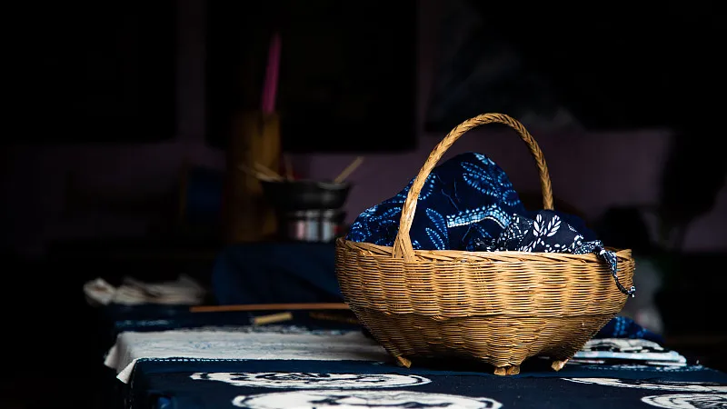
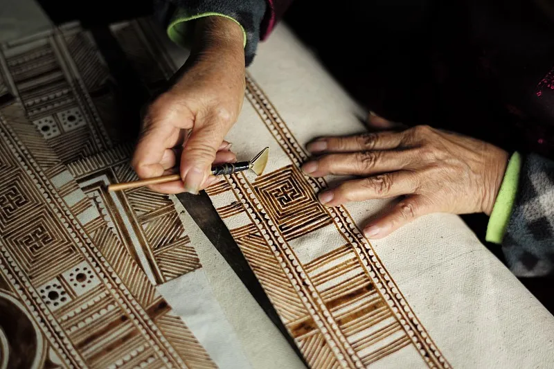

欢 迎 您 来 到 苗 族 蜡 染
先染后绣
色调丰富，层次分明，既朴实也艳丽
这
是蜡染是中华民族古老的民间传统印染工艺之一
2008年，珙县苗族蜡染被珙县人民政府公布为“珙县首批非物质文化遗产”；同年，被宜宾市人民政府公布为“宜宾市非物质文化遗产”。2009年被四川省人民政府公布为“四川省非物质文化遗产”。
2009年被四川省人民政府公布为“四川省非物质文化遗产”。
In 2008, the Miao batik of the Miao people in the county was announced as
the "first batch of intangible cultural heritage of the county" by the people's government of the county;
2009年被四川省人民政府公布为“四川省非物质文化遗产”。
In 2008, the Miao batik of the Miao people in the county was announced as
the "first batch of intangible cultural heritage of the county" by the people's government of the county;
国家级非物质文化遗产之一

家居用品
床单、被面、桌布、壁挂、窗帘等家居装饰品也会采用蜡染工艺制作，为日常生活增添了浓厚的艺术气息

服饰
蜡染布料常被用来制作苗族妇女的服装、头巾、腰带、背扇等，是苗族服饰文化的重要组成部分，体现了女性群体在家庭和社会生活中的角色与地位

文化交流与研究
苗族蜡染作为非物质文化遗产，吸引了国内外学者的研究兴趣，成为民族学、人类学、艺术史等领域的重要研究对象，对于传承民族文化、增进民族间相互了解具有重要意义